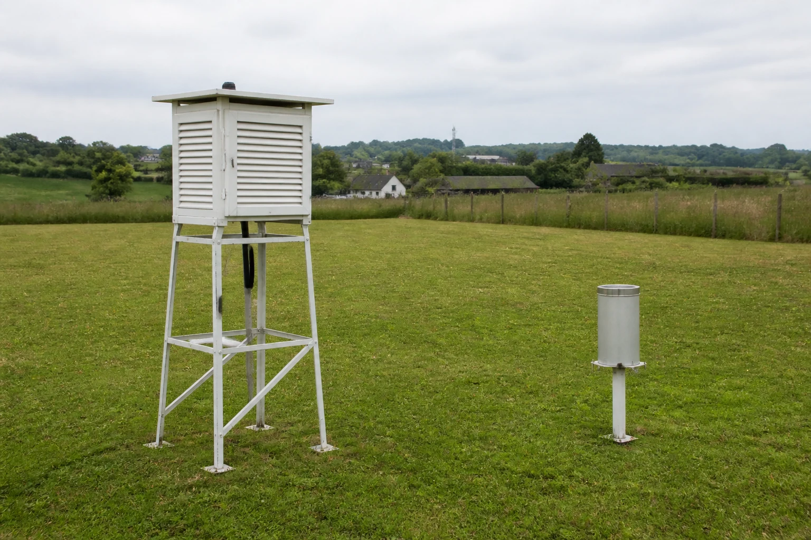
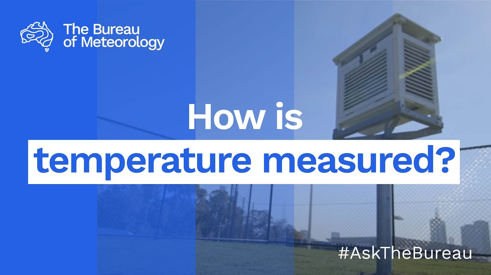

Learning purpose
Match common measurements to instruments and compare local observations with authoritative information.
Task 9 · Lesson 2 of 4
Match common measurements to instruments and compare local observations with authoritative information.
Learning purpose
Match common measurements to instruments and compare local observations with authoritative information.
Success criteria
Learning boundary
Supplementary learning and formative practice only. Current RTO assessment, local procedures and authorised supervision control real work.

A thermometer measures temperature, a rain gauge measures rainfall, an anemometer measures wind speed, a wind vane indicates direction, a barometer measures atmospheric pressure and a humidity sensor measures relative humidity. The workplace record should use the unit shown by the authorised instrument or source.
Knowing the name is only the beginning. The learner must also know what question the measurement can answer and what it cannot; for example, a temperature reading does not describe wind, rainfall or surface condition.

A reading is affected by where, when and how it was collected. Shelter, nearby structures, surface heat and instrument condition can make a local value different from a regional station or another point on the same property.
Follow the current workplace and manufacturer directions for instrument preparation and use. The learning site can explain the need for a consistent method, but it cannot authorise placement, adjustment or maintenance of local equipment.
Manual observation can provide useful local context, while automatic stations can collect regular readings over time. Neither should be accepted blindly if the timestamp, location, unit, condition or data transfer is uncertain.
An unusual value is a prompt to check the source and report the discrepancy, not permission to alter the record. Preserve the original entry, note the concern and use the authorised process to resolve it.
The Bureau of Meteorology is the authoritative national source for Australian forecasts and warnings. Workplace stations, observations and industry information add task context, while social posts and word of mouth may alert a worker to check but should not control a decision.
Check the source name, location, issue time, valid period and update status. A screenshot without those details can be accurate for its original moment but unsafe to present as current.
Fictional worked example
Observed evidence: At 3:30 pm on 22 October 2026, a fictional class dataset shows a yard sensor reading of 41 °C, a nearby shaded manual display of 31 °C and a Bureau observation of 30.6 °C issued at 3:00 pm. Decision and reason: Jordan does not delete the 41 °C reading or use it as proof of the whole property's temperature because the sources differ in siting and method. Safe action: Jordan records each source, location and timestamp and reports the discrepancy. Result: The supervisor marks the yard sensor for an authorised condition check and uses current confirmed information for the work review. Next check or record: The original reading remains traceable with a note explaining why it was questioned.
Comparing more than one source can reveal whether a reading is plausible and relevant. The goal is not always to average the values; averaging a faulty sensor with reliable readings can produce a number that has no real source.
Instead, compare like with like and explain the difference. Check time, distance, elevation, exposure and instrument status, then report which source is authoritative for the decision and what local evidence adds.
A traceable weather entry includes the measured element, value and unit, date and time, location, source or instrument, observer where required and any visible limitation. Use clear industry terms and retain uncertainty rather than replacing it with a guess.
Consistency matters when readings are compared over time. A change in location, unit or collection method should be noted so the next person does not mistake a method change for a weather trend.

External media loads only after you choose it.
Source-linked video
Why watch: See how the Bureau protects the quality of a common measurement.
Watch for: What features of the observation site help make temperature measurements comparable?
Formative practice
Each option explains the consequence. These answers save only on this device.
Written application
Apply and keep a learning record
Use the supplied dated dataset to identify missing units, timestamps, locations and source names. Mark entries for clarification without changing their values or treating them as current weather advice.
Learning record: A supplementary-learning data-quality annotation showing which entries are traceable and which require clarification.
Lesson responses and the activity are formative learning only. Formal sufficiency and competence remain with the current RTO process.
Source basis: AHCWRK210 Release 1 preparation, equipment, information-checking and record requirements; NESA Weather focus-area concepts; Bureau of Meteorology authority for current Australian forecasts and warnings. Local instrument use follows current supervisor and manufacturer directions.